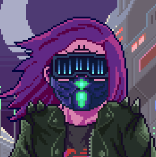

"Keep it simple, stay focused, master the craft, deliver excellence"
Tech enthusiast with a passion for DevOps, Kubernetes and all things infrastructure. When not cooking up scalable solutions, you'll find me experimenting in the kitchen. If it runs in a container or simmers in a pot, I'm into it. A true Swiss Army knife in the tech world— versatile, reliable, and always ready to tackle any challenge. Generalist at heart, specialist when needed.